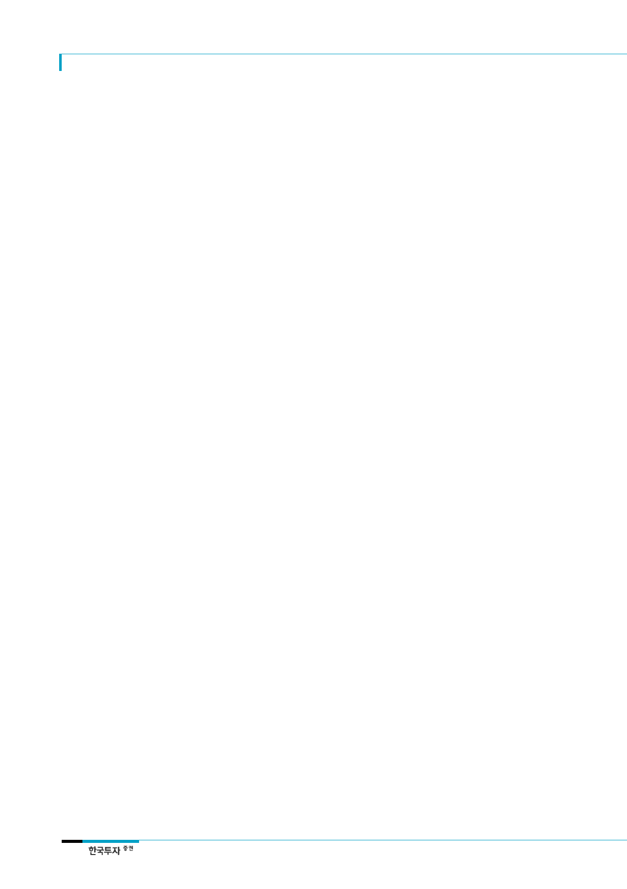

LG이노텍(011070)
III. 광학솔루션 뒤에는 든든한 전장
카메라 다음으로
매출규모가 큰 전장부품,
영업이익 기여도 커질 것
자동차 전장부품이
중요한 이유는
장기 지속성
LG이노텍의 차량부품은
모터, 통신모듈, 카메라모듈
2017년 차량부품 매출액은
전년대비 31% 증가,
연말 수주잔고는 11조원 육박
전장부품 사업부는 광학솔루션 사업부 다음으로 매출 규모가 크다. 2017년에는 듀얼카메
라 공급이 크게 확대되면서 전장부품 사업부의 매출비중은 18%로 작년과 유사하나 2018
년, 2019년에는 각각 21%, 25%로 상승할 전망이다. 영업이익 기여도는 2017년 13%,
2018년 18%, 2019년에는 23%로 예상된다.
자동차 전장부품이 중요한 이유는 공급의 장기 지속성으로 그 근거는 다음과 같다. 첫째,
자동차 전장부품의 연구개발에 길게는 4~5년이 소요되는 만큼 진입장벽이 높은 것으로
봐야 된다. 단순히 제품 가격이나 기술 경쟁력 차원에서 우위에 있다고 해서 채택되는 것
이 아니며 개발 초기부터 자동차 혹은 자동차 부품업체들과 호흡을 맞춰야 한다. 둘째, 자
동차 전장부품의 life-cycle은 스마트폰 또는 IT제품에 비해 상대적으로 길다. 자동차 구
매자들은 평균적으로 7~8년간 소유하고, 중고차 시장까지 포함하면 life-cycle이 길게는
10년까지 연장된다. 셋째, 자동차 전장부품의 기준은 일반 IT제품 대비 높다. 온도, 진동,
먼지, 외부압력 등이 IT제품과 상이하며 특히 운전자의 안전과 직결된 부품은 적격 기준
이 현저히 높다.
LG이노텍의 차량부품은 크게 모터/센서, 통신모듈 및 카메라모듈 등으로 구분된다. 모터
부문은 BLDC(Brushless DC) 기술의 소형정밀모터가 주력으로 power-steering용 모터,
자동차 제동력 제어용 모터, 변속기용 모터, 전자식 oil-pump용 모터, parking actuator
용 모터 등에 적용된다. 통신모듈에는 주로 자동차와 자동차 외부의 이동통신망을 연결하
는 3G/4G 통신모듈, 자동차 내부에서 모바일기기와 차량과의 연결을 위한
Bluetooth/WiFi 모듈, 주행 중에 앞뒤 차량의 위치/거리/속도 등을 측정하는 레이더모듈,
차량과 외부 기구를 연결하는 V2I(Vehicle to Infrastructure)모듈과 차량과 차량을 연결
하는 V2V(Vehicle to Vehicle)모듈 등이 있다. 카메라모듈에는 전방, around view, 운전자
의 상태인식 및 사이드미러용 카메라 등이 있다.
2017년 차량부품 매출액은 전년대비 31% 증가한 1조 877억원, 영업이익은 34% 증가한
524억원(영업이익률 4.8%)으로 예상된다. 신규 수주액은 2012년부터 2015년까지 연평균
67% 증가해 왔다. 2016년 신규 수주액은 2조 6,000억원으로 전년대비 7% 감소한 것으로
추정되는데 이는 4분기로 예상됐던 일부 수주가 올해 1분기로 이월됐기 때문이다. 회사는
2017년 신규 수주 목표를 3조 5,000억원으로 설정하고 있으며 우리는 2017년 말 수주
잔고가 11조원에 육박할 것으로 예상한다. 동사 전장부품의 경우 절반 가까이는 국내 자
동차 완성업체에, 20% 중반은 주력 계열사에, 나머지는 해외 고객사에 공급되고 있는 것
으로 추정된다.
4